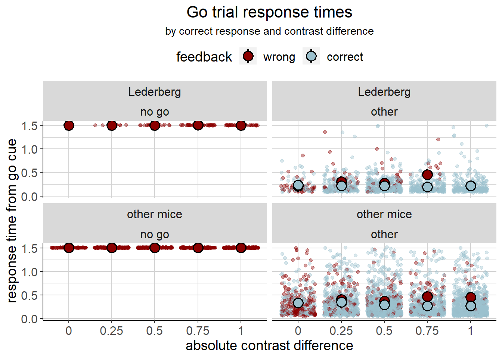

2 The Lederberg Situation
Lederberg had a very different neural response from the others, which is why we excluded him from the analysis. However, we briefly want to look at his behavioural data, since he seems to be a very smart mouse. Here are his response times, as compared to the other mice. He seems to be consistently fast for correct responses. And doesn’t seem to make any mistakes (except for no-go responses) at a contrast difference of one.

We can also look at his performance (see a detailed description of the plot below). He makes less errors overall. If he makes errors, they are less likely to be no-go responses. He basically always goes for it :-) We may have excluded him, but we would like to honour the smartes mouse in the data set here.